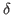

Next: Bibliography Up: Event-Driven Collusion Previous: Model
As a ``first pass'' result, we see that firms have more incentive when
 is low (remember in continuous time, low means more
value placed on future rewards) and the rate of public price
revelation  , (i.e. the rate of being caught), is high.
, (i.e. the rate of being caught), is high.